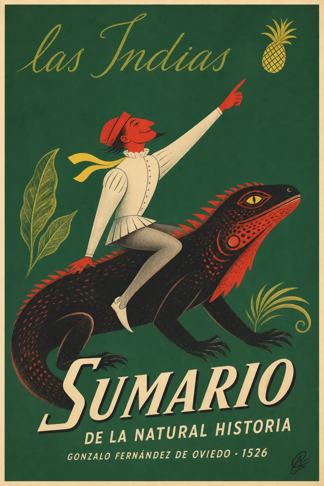

SINOPSIS
Publicado en Toledo en 1526, el Sumario organiza para un lector cortesano un mundo natural que Oviedo conoció durante sus servicios coloniales. Describe navegación, geografía, cultivos, árboles, animales, alimentos y prácticas humanas; sus xilografías y comparaciones intentan volver inteligibles realidades americanas para la imprenta europea. Esa atención empírica produjo observaciones decisivas sobre especies y técnicas, pero nunca fue inocente: nombrar, clasificar y medir también convertía territorios y saberes indígenas en información administrable por el imperio. El libro anuncia una obra más extensa, aunque no debe confundirse con un simple borrador de la posterior Historia general y natural de las Indias. Leerlo exige sostener ambas dimensiones a la vez: documento temprano de historia natural y artefacto del orden colonial.
Nota bibliográfica: edición, materialidad y relación con la obra posterior contrastadas con la Biblioteca Nacional de España.
CAPÍTULOS
Navegación, islas y Tierra Firme
Agricultura, alimentos y plantas útiles
Árboles, frutos y saberes de cultivo
Animales de tierra, agua y aire
Cuerpos, costumbres y mirada colonial
RESEÑAS

Excelente